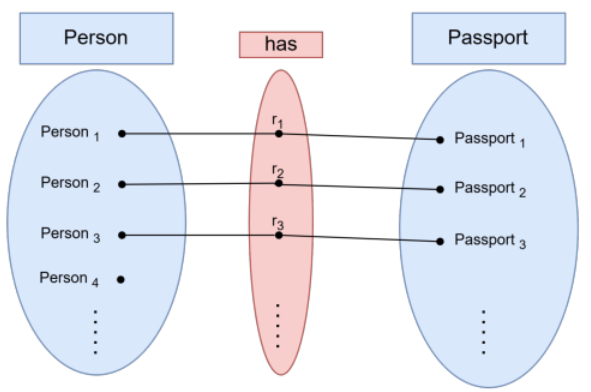
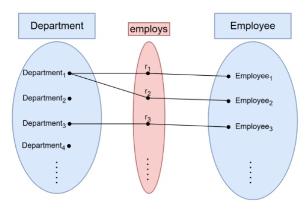
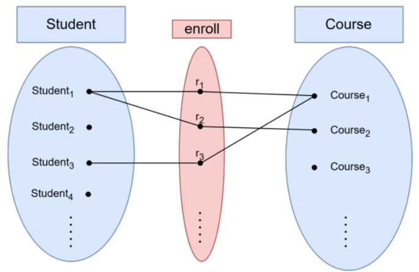

Chapter2Entity‐Relationship (ER) Model
Chapter Overview
Entity-Relationship (ER) modeling serves as the conceptual design phase in database development, acting as a crucial bridge between real-world requirements and software implementation. By translating unstructured business descriptions into precise visual schemas, ER diagrams establish a shared blueprint for business stakeholders and database engineers before any physical tables or SQL code are created. This chapter covers the database design lifecycle, the core components of conceptual data modeling (entities, attributes, and relationships), Chen notation visual symbols, key and structural constraints, and variations in relationship degrees and cardinalities.
The conceptual schema is the key to database design; all else is implementation detail.
1Scenario: "What Do You See in This Restaurant?"
🤔 Warmup Question
Imagine we are sitting at a table in a busy restaurant, and you look at me and ask, "Can you describe what you see?"
Click to expand
Naturally, I wouldn't start reciting code or listing software specifications. I would describe the scene in plain text:
"I see customers sitting at tables."
"There’s a server taking an order from a table."
"The kitchen is cooking dishes listed on the menu."
"When the meal is done, the server brings a bill to the customer."
This human ability to observe a real-world environment and describe its key elements is the exact starting point of Data Modeling.
However, computer systems and database developers cannot build a software system directly from plain text descriptions. Plain English can be ambiguous, vague, or open to misinterpretation. To bridge the gap between human language and actual database implementation, we need a structured, standardized way to express these plain text requirements. This is where Conceptual Modeling and Entity-Relationship Diagrams (ERDs) come in. They take those casual real-world observations and translate them into a clear visual blueprint of Entities (Customer, Order, Menu_Item), Attributes (Customer_Name, Price), and Relationships (A Customer places an Order).
Describing a scene as a human is fundamentally the same mental process as Data Modeling in computer science.
Data Model
Concepts for describing data objects and their relationships (meta model).
Real-World Example: E-Commerce Store
Imagine building an online store. Before creating databases or writing code, you define the core concepts of the business:
Entities (The Main Objects):
Customer: The person making a purchase.Order: The transaction placed by a customer.Product: The item being sold.
Attributes (Key Characteristics):
Customer: Name, Email Address.Order: Order Date, Total Amount.Product: Product Name, Price.
Relationships & Cardinalities (How They Connect):
A
Customerplaces anOrder(One customer can place many orders, but an order belongs to one customer).An
Ordercontains aProduct(One order can contain many products, and a product can appear in many orders).
2DB Design Lifecycle Phases
No database should be designed from thin air. A well-established design lifecycle guides the process from understanding what users need to deploying a production system.
Collect and analyze data and application requirements
Key Questions: What data must be stored? What queries must be answered?
Deliverable: Data requirements document.
Model data semantics and structure, independent of logical data model
Key Questions: What entities and relationships exist in the domain?
Deliverable: ER diagram.
Model data with implementation primitives of concrete data model.
Key Questions: How do entities translate to tables? Are they normalized?
Deliverable: Relational schema.
Model user‐level data organization in a specific DBMS (and data model)
Account for deployment environment and performance requirements.
Key Questions: Which indexes? What storage engine? How to partition?
Deliverable: Annotated schema + storage spec.
3Conceptual Data Modeling: Translating Ideas into Structure
Before drawing an Entity-Relationship Diagram (ERD), you must first define the Conceptual Data Model itself. While an ERD is the visual chart or diagram, conceptual data modeling is the high-level design process that identifies what core concepts exist in a domain and how they connect.
Conceptual Data Model
is the general language, rules, and notation framework used to model data conceptually (such as the Entity-Relationship Model (ERM) or UML).
Conceptual Schema
A description of the structure of a database at a level that is independent of any specific DBMS, storage format, or programming language. It answers: “What data exists, and how is it connected?”— not “How is it stored?”
3.1The Purpose of Conceptual Data Modeling
High-Level Abstraction: It captures essential business concepts without being tied to specific technology, software engines, or database types (SQL vs. NoSQL).
Stakeholder Bridge: It serves as a shared vocabulary between technical developers and non-technical business managers to ensure everyone agrees on basic terms.
Scope Definition: It sets clear boundaries on what information the system will track and what it will ignore.
3.2Core Building Blocks
Every conceptual model relies on three fundamental elements:
Entities (Objects of Interest): Real-world subjects, places, or events you need to store information about.
Example:
Customer,Order,Product,Employee.
Attributes (Properties & Characteristics): Essential traits that describe each entity.
Example: A
Customerentity has attributes likeNameandEmailAddress.
Relationships (Business Rules & Connections): Statements describing how entities interact with one another.
Example: A
Customerplaces anOrder.
3.3The Conceptual Design Process
To move from raw business requirements to a formal model, follow these initial steps:
Extract Nouns & Verbs from Requirements: Read through your business rules. Nouns usually map to Entities or Attributes, while verbs map to Relationships.
Requirement Text: "A student enrolls in multiple courses."
Entities:
Student,CourseRelationship: Enrolls In
Determine Cardinality & Business Constraints: Decide how many instances of one entity can relate to another (e.g., 1-to-1, 1-to-Many, Many-to-Many).
Draft the Visual Representation: Once these rules and entities are clearly defined, you translate them into visual notation using an ER Diagram (ERD).
Read through your business rules. Nouns usually map to Entities or Attributes, while verbs map to Relationships.
Requirement Text: "A student enrolls in multiple courses."
Entities:
Student,CourseRelationship: Enrolls In
Decide how many instances of one entity can relate to another (e.g., 1-to-1, 1-to-Many, Many-to-Many).
Once these rules and entities are clearly defined, you translate them into visual notation using an ER Diagram (ERD).
4What Is an ER Diagram?
ER modeling was introduced by Peter Chen in 1976. Its core contribution was giving database designers a single, shared language to communicate with both business stakeholders (who understand the problem domain) and software engineers (who will implement the solution).
Entity-Relationship (ER) Diagram
A graphical representation of a conceptual schema—a high-level, implementation-independent description of the data a system must store.
Conceptual Schema
A description of the structure of a database at a level that is independent of any specific DBMS, storage format, or programming language. It answers: “What data exists, and how is it connected?”— not “How is it stored?”
4.1ER Notations Overview
An ER diagram is a graphical language, and like any language it comes in different dialects. Three notations are widely used; you will encounter all three in textbooks and professional tools.
| Notation | Introduced by | Where you see it |
|---|---|---|
| Chen | Peter Chen, 1976 | University textbooks, academic exams, this course |
| Min-Max (Structural Constraints) | Various authors | Formal specifications needing exact minimum and maximum counts |
| Crow’s Foot | Industry convention | Design tools — MySQL Workbench, Lucidchart, draw.io, Visio, ERwin |
All three notations express the same concepts — entities, attributes, relationships, cardinality, and participation — using different visual symbols. You do not need to master all three right now. The important thing is to know they exist so you can recognise a diagram regardless of the notation it uses.
4.2Chen Notation
4.2.1Chen Notation — Symbol Reference
Chen notation is the academic standard you will use for all diagrams in this course. The table below is your reference for every symbol.
| Concept | Shape | Description |
|---|---|---|
| Strong Entity | Single rectangle | An object with independent existence and its own key |
| Weak Entity | Double rectangle | An object that depends on another entity for identification |
| Relationship | Single diamond | An association between two or more entities |
| Identifying Relationship | Double diamond | The relationship that identifies a weak entity |
| Attribute | Ellipse (oval) | A property of an entity or relationship |
| Key Attribute | Ellipse with underlined name | Uniquely identifies each entity instance |
| Multivalued Attribute | Double ellipse | Can hold multiple values per instance |
| Derived Attribute | Dashed ellipse | Computed from another stored attribute |
| Composite Attribute | Ellipse → child ellipses | Built from smaller sub-attributes |
| Total Participation | Double line | Every instance of the entity must participate |
| Partial Participation | Single line | Some instances may not participate |
| Cardinality label | 1, N, or M on the line | Placed near each entity; shows the maximum |

4.2.2Entities
4.2.2.1Strong Entity
A strong entity type (or simply entity type) is a real-world object or concept that:
Has an independent existence — it does not depend on another object to exist in the database.
Has a set of attributes that describe it.
Has at least one attribute (or combination) that uniquely identifies each instance — its key attribute.
Notation: A single rectangle labeled with the entity name (all caps by convention).
STUDENT entity with its attributes in Chen notation
Student is the entity (rectangle),ID is the key attribute (underlined), andNAME,GENDER,DOBare simple attributes (ovals connected by lines).

4.2.2.2Weak Entity
A weak entity type has no key attribute of its own— it cannot be uniquely identified without reference to another entity (its owner).
Partial Key
The attribute(s) of a weak entity that, combined with the owner entity's key, uniquely identify a weak entity instance.
| Feature | Strong Entity | Weak Entity |
|---|---|---|
| Has own key? | Yes | No — only a partial key |
| Identified by | Own primary key | Owner’s key + partial key |
| Rectangle notation | Single | Double |
| Identifying relationship | Single diamond | Double diamond |
| Participation in identifying rel. | May vary | Always total |
Key characteristics include:
Identification: Identified by combining the owner entity's primary key with its own partial key (discriminator).
Notation: Drawn as a double rectangle in Chen notation.
Relationship: Connected to its owner through an identifying relationship (drawn as a double diamond).
Participation: Always has total participation in its identifying relationship, meaning a weak entity instance cannot exist in the database without an owner.
Room is a weak entity identified by Hotel (owner) + roomNumber (partial key, dashed underline). The HAS relationship is the identifying relationship (double diamond in full Chen notation).
Hotelis the strong entity— it has its own key (hotelID, underlined).Roomis the weak entity—roomNumberalone is not unique across all hotels (two hotels can both have room 101). It is identified by the combination(hotelID, roomNumber).HASis the identifying relationship(1:N — one hotel has many rooms).

4.2.3Attributes
Attribute
A property that describes an entity type or relationship type.
| Type | Description | Chen Shape | Example |
|---|---|---|---|
| Simple | Atomic, cannot be divided further | Plain oval | Salary, Gender |
| Composite | Built from smaller sub-attributes | Oval feeding child ovals | Name → (Fname, Minit, Lname) |
| Multivalued | Can hold multiple values per entity instance | Double oval | Phone_Numbers, Dept_Locations |
| Derived | Computed from another stored attribute; not physically stored | Dashed oval | Age derived from Bdate |
| Stored | Permanently stored; may be a source for derived attributes | Plain oval | Bdate |
| Key | Uniquely identifies each entity instance | Oval with underlined text | Ssn, Dnumber |
| Partial key | Identifies weak entity instances within the owner; not globally unique | Oval with dashed underline | Name (of DEPENDENT) |
4.2.3.1Simple (Atomic) Attribute
Simple (Atomic) Attribute
An attribute that cannot be divided into smaller meaningful parts.
Simple attributes — Product entity: every oval holds one indivisible value

4.2.3.2Composite Attribute
Composite Attribute
An attribute made up of smaller, meaningful sub-attributes.
Composite attributes — Employee FullName and Address each decompose into sub-attributes

4.2.3.3Single-Valued Attribute
Single-Valued Attribute
An attribute that holds exactly one value for each entity instance.
Single-valued attributes — each User has exactly one id, one name and one email

4.2.3.4Multi-Valued Attribute
Multi-Valued Attribute
An attribute that can hold more than one value for the same entity instance.
Multi-valued attributes — Addresses and Skills drawn as double ovals because one employee may have several

4.2.3.5Derived Attribute
Derived Attribute
An attribute computed from another stored attribute rather than physically stored in the database.
Derived attribute — Age (dashed oval) is computed from the stored DOB attribute

In the example,Age(dashed oval) is derived from the storedDOBattribute.
4.2.3.6Key Attribute
Key Attribute
An attribute that uniquely identifies each entity instance.
The ER Key Rule
Every strong entity type must have exactly one key attribute(or one composite key attribute group) that uniquely identifies each instance. You cannot draw a valid ER diagram for a strong entity without specifying its key.
Weak entities do not have their own key — instead they have a partial key that, combined with the owner entity’s key, forms a composite identifier.
What about Foreign Keys?
Foreign keys do not appear in ER diagrams. They are a relational concept — a column in one table that references the primary key of another table. Foreign keys are introduced in Chapter 5 and created automatically by the ER-to-relational mapping rules.
4.2.3.6.1Key Attribute (Strong Entity)
A key attribute is drawn as an oval with its name underlined. It guarantees that no two instances of the entity have the same value for that attribute.
One entity can have only one key attribute(or one composite key group) at the ER level.
If two candidate identifiers exist (e.g., both
SSNandEmailare unique), you underline one in the ER diagram — the one you choose as the primary identifier. The other becomes an alternate key at the relational level.The key attribute in the ER diagram maps directly to the primary key column(s) when the entity becomes a relational table.
4.2.3.6.2Partial Key (Weak Entity)
A partial key is drawn with a dashed underline. It is not globally unique — it is only unique within the set of instances owned by the same owner entity.
Partial Key
The attribute(s) of a weak entity that, combined with the owner entity's key, uniquely identify a weak entity instance.
Note
The full identifier of a weak entity instance is: owner’s primary key + partial key.
This combination maps to a composite primary key in the relational table.
4.2.4Relationships
Relationship
An association or connection among two or more entity types. In Chen notation, it is represented visually by a single diamond labeled with a verb or verb phrase describing the association.
4.2.4.1Degree of a Relationship
Degree of a Relationship
The number of participating entity types in a relationship (e.g., Unary/1, Binary/2, Ternary/3).
The three degrees are:
Unary (Recursive): A single entity type associated with itself (e.g., an
EMPLOYEEsupervising anotherEMPLOYEE).Binary: Connects two entity types (e.g.,
EMPLOYEEworks forDEPARTMENT).Ternary: Involves three entity types simultaneously.


Note
Most real-world relationships are binary. Before using a ternary relationship, ask whether it can be decomposed into two binary ones without losing information.
4.2.4.2Cardinality Ratios
Cardinality Ratio
Specifies how many instances of one entity can be associated with one instance of another entity (1:1, 1:N, M:N).
4.2.4.2.1One-to-One (1:1)
Each instance of entity A is associated with at most one instance of entity B, and vice versa.
1:1 relationship — each Person has at most one Passport; each Passport belongs to exactly one Person
Requirements:
Each person has at most one passport — not everyone has a passport.
Each passport belongs to exactly one person — every passport has an owner.



Reading: “A person may have zero or one passport; a passport must be owned by exactly one person.”
4.2.4.2.2One-to-Many (1:N)
One instance of entity A is associated with many instances of entity B, but each B instance is associated with at most one A.
1:N relationship — one Department employs many Employees; each Employee belongs to exactly one Department
Requirements:
A department can exist without employees (e.g., a newly created department with no staff yet) →partial participation of Department in the relationship.
An employee must be assigned to a department →total participation of Employee in the relationship.



Reading:
Left → Right (Department → Employee):One department employs zero or more employees.
Right → Left (Employee → Department):Each employee works for exactly one department.
4.2.4.2.3Many-to-Many (M:N)
Each instance of entity A can be associated with many instances of entity B, and each B can be associated with many A’s.
M:N relationship — many Students enroll in many Courses; many Courses have many Students
Requirements:
One student can enroll in multiple courses, and one course can have multiple students enrolled.
A student can exist in the system without currently being enrolled in any course (e.g., a newly admitted student).
A course can exist in the system without any enrolled students (e.g., a newly created course section).



Reading:
Left → Right (Student → Course):A student may enroll in zero or more courses.
Right → Left (Course → Student):A course may have zero or more students.
4.2.4.3Participation Constraints
Participation Constraint
Specifies whether every instance of an entity must participate in a relationship (Total) or if participation is optional (Partial).
| Line type | Name | Meaning |
|---|---|---|
| Single line ─ | Partial participation | Some instances may not participate |
| Double line ═ | Total participation | Every instance must participate |
Department managed By Employee
Department side →double line (total): every department must be managed by exactly one employee.
Employee side →single line (partial): not every employee is a manager — an employee may manage a department, but doesn’t have to.

Note
Total participation means the entity cannot exist in the database without being connected to this relationship. A department record cannot be inserted unless it has a managing employee assigned to it.
4.2.4.4Relationship Attributes
Relationship Attribute
Data or a value that belongs specifically to the pairing of entities rather than to either entity alone.
WORKS_ON relationship attribute
Hours in WORKS_ON is a relationship attribute: it is the number of hours this employees pends on this project.
Storing it with
EMPLOYEEis wrong: hours on which project?Storing it with
PROJECTis wrong: hours by which employee?It belongs to the combination
(Employee, Project)— i.e., the relationship.
In Chen notation, relationship attributes are drawn as ovals attached to the diamond.

4.2.4.5Recursive (Unary) Relationships
A relationship where the same entity type participates more than once, in different roles.
Recursive relationship : Supervisor is a role of Employee

Why the first diagram is wrong:Supervisoris not a different kind of thing fromEmployee— a supervisor is an employee who happens to manage others. Drawing two separate entity boxes implies two different tables in the database, which is incorrect.
Note
Partial Participation on Both Ends: Use single lines for both connections because an employee can exist without supervising anyone (regular workers), and a top-level manager can exist without having a supervisor above them.

Why the second diagram is correct: A singleEmployeeentity with a recursiveSUPERVISIONrelationship back to itself, with two labelled roles:Supervisor(1 side) andSupervisee(N side). One entity maps to one table — the role is just a label on the line.
4.3Worked Example: The Company Database
Note
This section builds the Company Database ER diagram incrementally — one requirement at a time. For each step, the relevant sentence from the requirements is highlighted, followed by the updated diagram and an explicit note on any assumption made.
4.3.1Requirements
The company has several departments. Each department has a unique name and a number. A department is managed by exactly one employee, who is called the manager. The manager has a start date for their managerial role. A department may have several locations.
Each employee has a unique social security number (SSN), a first name, middle initial, last name, date of birth, address, gender, and salary. An employee’s age can be derived from their date of birth and does not need to be stored separately. Each employee works in exactly one department but may work on several projects. We track the number of hours per week each employee works on each project. Each employee may be supervised by at most one other employee.
Each project has a unique name, a number, and a single location. Each project is controlled by exactly one department.
Employees may have dependents. Each dependent has a name, gender, date of birth, and relationship to the employee.
4.3.2Step 1 — EMPLOYEE Entity
From Requirements
Each employee has a unique social security number (SSN), a first name, middle initial, last name, date of birth, address, gender, and salary. An employee’s age can be derived from their date of birth and does not need to be stored separately.
We start with the most described entity: EMPLOYEE.
SSN→key attribute(underlined oval) — uniquely identifies each employeeName→composite attribute— decomposes intoFname,Minit,LnameBdate→ stored attribute — the value is physically kept in the databaseAge→derived attribute(dashed oval) — computed fromBdate; never storedAddress,Gender,Salary→ simple, single-valued attributes

4.3.3Step 2 — DEPARTMENT Entity + MANAGES Relationship
From Requirements
The company has several departments. Each department has a unique name and a number. A department may have several locations. A department is managed by exactly one employee, who is called the manager. The manager has a start date for their managerial role.
We start with the most described entity: EMPLOYEE.
DEPARTMENTis a strong entity;Numberis its key attributeLocations→multivalued attribute(double oval) —“may have several”Start_date→relationship attributeon MANAGES — it belongs to the (Employee, Department) pairing, not to either entity aloneDepartment side of MANAGES:“exactly one”→totalparticipation, max = 1 (double line, label 1)
Employee side of MANAGES:The requirement does not say every employee is a manager. “Manager” is aroleplayed by some employees, not a separate entity type.

4.3.4Step 3 — WORKS_FOR Relationship
From Requirements
Each employee works in exactly one department.
WORKS_FOR connects EMPLOYEE and DEPARTMENT with cardinality N:1.
Employee side: “exactly one” →total participation (double line), max = 1
Department side: The requirement only states where employees go; it says nothing about whether a department must have employees.
Assumption — WORKS_FOR (Department side)
Stated: Every employee must belong to exactly one department → Employee side is total.
Assumption: The diagram shows a single line on the Department side, meaning a department can exist with zero employees assigned to it → Department side is partial, min = 0, max = N.
This is a design choice. You could require every department to have at least one employee by making their side total (double line).

4.3.5Step 4 — PROJECT Entity
From Requirements
Each project has a unique name, a number, and a single location.
PROJECT is a strong entity with three attributes.
Number→key attribute(underlined oval)Name→ simple attribute (unique per requirements, but Number is the diagrammatic key)Location→ simple, single-valued attribute —“a single location ”confirms no double oval needed
Assumption — WORKS_FOR (Department side)
Stated: Every employee must belong to exactly one department → Employee side is total.
Assumption: The diagram shows a single line on the Department side, meaning a department can exist with zero employees assigned to it → Department side is partial, min = 0, max = N.
This is a design choice. You could require every department to have at least one employee by making their side total (double line).

4.3.6Step 5 — CONTROLS Relationship
From Requirements
Each project is controlled by exactly one department.
CONTROLS connects PROJECT and DEPARTMENT with cardinality N:1.
Project side: “exactly one”→ total participation (double line), max = 1
Department side: The requirement says nothing about whether a department must control any projects.
Assumption — CONTROLS (Department side)
Stated: Every project is controlled by exactly one department → Project side is total.
Assumption: A department may control zero or many projects → Department side is partial, min = 0, max = N.
The requirements do not require every department to control a project.

4.3.7Step 6 — WORKS_ON Relationship
From Requirements
Each employee may work on several projects. We track the number of hours per week each employee works on each project.
WORKS_ON connects EMPLOYEE and PROJECT with cardinality M:N.
Hours→ relationship attribute on WORKS_ON — it belongs to the (Employee, Project) pairing, not to either entity aloneEmployee side: The word “may” explicitly makes this partial(min = 0), max = N
Project side: Not stated — see assumption below.
Assumption — WORKS_ON (Project side)
Stated: “May work on”→ Employee participation is partial— directly from requirements.
Assumption: A project that has no employees assigned is not yet operational → Project side is total, min = 1, max = N.
This assumption must be confirmed with stakeholders — it is not stated in the text.

4.3.8Step 7 — SUPERVISION Relationship
From Requirements
Each employee may be supervised by at most one other employee.
SUPERVISION is a recursive (unary) relationship — EMPLOYEE related to itself, with two roles: Supervisor and Supervisee.
Supervisee side: “may be supervised” → partial(min = 0);“at most one”→ max = 1
Supervisor side: Not stated — see assumption below.
Project side: Not stated — see assumption below.
Assumption — SUPERVISION (Supervisor side)
Stated: Each employee may be supervised by at most one → Supervisee side is partial, max = 1.
Assumption: Not every employee supervises anyone (e.g., a regular worker has no one under them; the top-level manager also has no supervisor) → Supervisor side is partial, min = 0, max = N.

4.3.9Step 8 — DEPENDENT Weak Entity + HAS (Full Diagram)
From Requirements
Employees may have dependents. Each dependent has a name, gender, date of birth, and relationship to the employee.
DEPENDENT is a weak entity — it has no key of its own and cannot exist without its owning employee.
Name→ partial key(dashed-underline oval) — unique within one employee’s dependents, not globallyGender,Bdate,Relationship→ simple attributesHASis the identifying relationship(double diamond) — the combination(SSN, Name)uniquely identifies each dependentEmployee side: “may have” →partial(min = 0, max = N)
Dependent side: A dependent cannot exist without an employee →total(min = 1) — this follows structurally from the weak entity definition, not from an assumption

5Min-Max Notation
Chen notation tells us whether a participation is total or partial and what the cardinality ratio is (1:1, 1:N, M:N), but it stops short of answering a frequent business question: exactly how many? “At most three active orders,” “between two and five team members,” “exactly one department chair” — these rules all collapse into Chen’s coarse labels. Min-Max notation was introduced precisely to close that gap: it keeps the same diagram shape but replaces each line-end label with a numeric pair (min, max) that pins down both bounds explicitly.
5.1What Do min and max Mean?
min— the minimum number of relationship instances this entity must participate in:
min=0→ participation is optional(equivalent to a single line in Chen)
min≥1→ participation is mandatory(equivalent to a double line in Chen)
max— the maximum number of relationship instances this entity can participate in:
max=1→ at most one
max=N(or∞) → no upper limit
| (min,max) pair | English reading | Chen equivalent |
|---|---|---|
| (0,1) | “zero or one” | Partial, cardinality 1 |
| (1,1) | “exactly one” | Total, cardinality 1 |
| (0,N) | “zero or more” | Partial, cardinality N |
| (1,N) | “one or more” | Total, cardinality N |
| (4,N) | “at least four” | Total, cardinality N |
Why use Min-Max instead of Chen labels?
Chen notation labels each relationship line with 1, N, or M — this captures the maximum cardinality but not the minimum. Min-Max adds the minimum, making it immediately clear whether participation is optional or mandatory without relying on single-vs-double lines. It is especially useful when writing precise business rules for a development team to implement.
5.2Placement Rule
The (min, max) pair is written on the line next to the entity it constrains. The general form is:

An instance of Entity A may be related to at least min1 and at most max1 instances of Entity B.
Likewise, min2 is the minimum number and max2 is the maximum number of instances of Entity A in to which Entity B is related.
Min-Max notation on an EMPLOYEE–DEPARTMENT relationship (illustrative values).
The diagram below shows Min-Max annotation on a generic EMPLOYEE–DEPARTMENT relationship. The values here are chosen to illustrate specific constraint patterns and are independent of the Company Database worked example.

| Pair | Placed next to | Meaning |
|---|---|---|
| (1,1) | EMPLOYEE | Every employee is associated with exactly one department — mandatory and singular. |
| (4,N) | DEPARTMENT | Every department has at least 4 employees — a specific minimum business rule. |
5.3Company Database in Min-Max Notation
The table below re-expresses every relationship from the Worked Example using (min,max) pairs, consistent with the Full Constraint Summary and the Chen diagram.
| Relationship | Entity A | (min,max) on A | Entity B | (min,max) on B |
|---|---|---|---|---|
| WORKS_FOR | EMPLOYEE | (1,1) | DEPARTMENT | (0,N) |
| MANAGES | EMPLOYEE | (0,1) | DEPARTMENT | (1,1) |
| WORKS_ON | EMPLOYEE | (0,N) | PROJECT | (1,N) |
| CONTROLS | PROJECT | (1,1) | DEPARTMENT | (0,N) |
| SUPERVISION | EMPLOYEE (Supervisee) | (0,1) | EMPLOYEE (Supervisor) | (0,N) |
| HAS | EMPLOYEE | (0,N) | DEPENDENT | (1,1) |

5.4Chen vs Min-Max: Side-by-Side Examples
Professor CHAIRS Department
The university has several departments. Each department must have exactly one chairperson who must be a professor. A professor can chair at most one department. Some professors may not chair any department — the chairperson role is optional for professors. If a professor is appointed as chair, they must chair exactly one department. No department can exist without a chairperson.
Note
A department chair isa faculty member in a given academic department, assigned by the dean to manage that department.
✅ Show Solution
Relationship: CHAIRS
| Property | Entity A — Professor | Entity B — Department |
|---|---|---|
| Participation | Partial (optional) | Total (mandatory) |
| (min,max) | (0,1) | (1,1) |
| Chen cardinality label | 1 | 1 |

How to read — Chen:
Left → Right (LTR): Each Professor chairs 0 or 1 Department.
Right → Left (RTL): Each Department is chaired by exactly 1 Professor.
The double line on the Department side means Department participation is total (mandatory).
The single line on the Professor side means Professor participation is partial (optional).

How to read — Min-Max:
A professor chairs at most one department — but is not required to chair any.
Every department has exactly one chair — mandatory, and only one.
Key insight
Chen told us the ratio (1:1) but left participation implicit in the line style. Min-Max spells out both the minimum and maximum in a single, self-documenting pair.
Student HOLDS_PERMIT Parking_Permit
Students may obtain a parking permit from the university. A student can have at most one parking permit. Some students don’t have cars and therefore have no permit. Each parking permit is assigned to exactly one student, but permits can exist in the system before being assigned. If a student leaves, their permit becomes available for reassignment.
✅ Show Solution
Relationship: HOLDS_PERMIT
| Property | Entity A — Student | Entity B — Parking_Permit |
|---|---|---|
| Participation | Partial (optional) | Partial (optional) |
| (min,max) | (0,1) | (0,1) |
| Chen cardinality label | 1 | 1 |

How to read — Chen:
Left → Right (LTR): Each Student holds 0 or 1 Parking Permit.
Right → Left (RTL): Each Parking Permit is held by 0 or 1 Student.
Single line on both sides → participation is partial on both ends (neither student nor permit is required to be matched).

How to read — Min-Max:
A student holds at most one parking permit — but may hold none.
A parking permit is held by at most one student — but may be unassigned.
Key insight
Both sides are optional. Min-Max makes this unambiguous without having to check whether lines are single or double.
Note
The full implementation of reassignment — ON DELETE SET NULL, status trigger, and the design discussion SET NULL vs. CASCADE
Department OFFERS Course
Every department in the university must offer at least one course. A course must be offered by exactly one department. Departments can offer multiple courses. Courses cannot exist without being associated with a department. New departments must create at least one course within their first semester.
✅ Show Solution
Relationship: OFFERS
| Property | Entity A — Department | Entity B — Course |
|---|---|---|
| Participation | Total (mandatory) | Total (mandatory) |
| (min,max) | (1,N) | (1,1) |
| Chen cardinality label | N | 1 |

How to read — Chen:
Left → Right (LTR): Each Department offers 1 or more Courses.
Right → Left (RTL): Each Course is offered by exactly 1 Department.
Double line on both sides → participation is total on both ends.

How to read — Min-Max:
Every department offers at least one course (no upper limit).
Every course is offered by exactly one department.
Key insight
Chen’s double lines on both sides simply said “mandatory on both ends.” Min-Max adds the upper bound: a department can offer many courses, but a course belongs to only one department.
Warning
The static ER diagram cannot capture the timing rule “within the first semester.” The enforcement trigger
Professor ADVISES Student
Professors may serve as academic advisors to students. A professor can advise multiple students. Some professors choose not to advise any students. A student may have at most one academic advisor. Some students, particularly freshmen, may not have an assigned advisor yet. Each advisor-student relationship is formalized through the advising system.
✅ Show Solution
Relationship: ADVISES
| Property | Entity A — Professor | Entity B — Student |
|---|---|---|
| Participation | Partial (optional) | Partial (optional) |
| (min,max) | (0,N) | (0,1) |
| Chen cardinality label | N | 1 |

How to read — Chen:
Left → Right (LTR): Each Professor advises 0 or more Students.
Right → Left (RTL): Each Student is advised by 0 or 1 Professor.
Single line on both sides → participation is partial on both ends.

How to read — Min-Max:
A professor may advise any number of students — or none at all.
A student may have at most one advisor — but is not required to have one.
Key insight
Chen indicated a 1:N ratio with optional participation, but gave no upper bound on the N side. Min-Max confirms there truly is no cap on how many students a professor can advise, while also confirming a student cannot have more than one.
The phrase “Each advisor-student relationship is formalized through the advising system” is a strong hint that ADVISES is not a simple binary connection — it carries descriptive information of its own. In ER modelling, when a relationship has data associated with it (not belonging to either entity alone), that data is modelled as relationship attributes.
| Attribute | Type | Meaning |
|---|---|---|
| assignment_date | DATE | When the advising relationship was established |
| status | ENUM(ACTIVE, INACTIVE, PENDING) | Current state of the advisory relationship |
| end_date | DATE (nullable) | When the relationship was formally terminated |
| notes | TEXT | Free-text notes entered by advisor or registrar |

5.5Specific Value Constraints: ( 0 , 3 ) (0,3), ( 2 , 5 ) (2,5), and Beyond
Not every business rule fits neatly into the four standard patterns
(0,1), (1,1), (0,N), (1,N)
Min-Max notation allows any non-negative integers as the min and max values.
| Example | English meaning | Typical business rule |
|---|---|---|
| (0,3) | zero to three | A customer may place at most 3 active orders at a time |
| (2,5) | two to five | A project team must have between 2 and 5 members |
| (1,4) | one to four | An employee manages at least 1, at most 4 direct reports |
| (3,3) | exactly three | A committee seat is always filled by exactly 3 co-chairs |
These constraints are perfectly valid at the conceptual level — they are precise expressions of real business rules that the common patterns simply cannot capture. Write them on your ER diagram exactly as you would any other (min,max) pair.
Conceptual validity ≠ automatic SQL enforcement
Standard SQL foreign-key constraints only know how to enforce “must exist” (referential integrity). They have no mechanism to count how many rows a related entity participates in before accepting or rejecting a change. Specific value constraints such as (0,3) or (2,5) therefore cannot be enforced by foreign keys alone.
Enforcing specific value constraints in the database requires either subquery-CHECKs (PostgreSQL), triggers, stored procedures, or application logic.
6Enhanced Entity-Relationship (EER) Modeling
6.1The Scenario: Hospital Staff Management (AAUP Medical Center)
At the Arab American University Medical Center (AAUP Center) in Jenin, database designers need to model various employee types (DOCTOR,
RESEARCHER, NURSE, SECRETARY, TECHNICIAN, ENGINEER).
All staff members share foundational attributes: SSN, Name, Address, and Salary. However, specific roles require unique local attributes (e.g., Specialty for doctors, EquipmentCert for technicians). Furthermore, employees are categorized by payment method (SALARIED_EMPLOYEE vs. HOURLY_EMPLOYEE) and leadership roles (MANAGER).
This domain presents complex real-world business constraints:
Strict Disjointness: An employee must be either Salaried or Hourly.
Overlapping Roles: A single individual can hold multiple roles simultaneously. For example, Dr. Tariq Zaid serves as an attending physician in Cardiology (
DOCTOR) while also directing cardiovascular research trials (RESEARCHER), or acting as the department head (MANAGER).
6.1.1Case 1: Separate Entities (Duplicated Attributes)
In a standard ER model without superclass/subclass features, each functional role is modeled as a completely independent entity table (DOCTOR, RESEARCHER, TECHNICIAN, etc.). Base attributes (SSN, Name, Address, Salary) are repeated inside every single table.

Issues & Vulnerabilities in Case 1:
Update Anomalies: If Dr. Tariq moves from Jenin to Nablus, an
UPDATEstatement executed on theDOCTORtable leaves his record in theRESEARCHERtable out of date, resulting in an inconsistent database state.Complex Global Queries: Retrieving a roster of all hospital personnel requires executing a costly
UNIONacross 5+ tables (SELECT ... FROM DOCTOR UNION SELECT ... FROM RESEARCHER ...).High Maintenance Overhead: Modifying a shared property (e.g., increasing the character limit of
Address) requires running schema migrations (ALTER TABLE) on every role table individually.Relationship Clutter: Connecting employees to another entity (e.g.,
DEPARTMENT) requires drawing separate, redundant relationship links for every entity type (DOCTOR_WORKS_IN,NURSE_WORKS_IN, etc.).
6.1.2Case 2: Single Table with All Attributes
To avoid separate tables, another standard ER approach collapses every role into a single, massive EMPLOYEE table containing all shared attributes along with every role-specific attribute (Specialty, EquipmentCert, TypingSpeed, Grant_ID, PayScale).

| SSN (PK) | Name | Address | Salary | Specialty | EquipmentCert | TypingSpeed | Grant_ID | Role |
|---|---|---|---|---|---|---|---|---|
| 401928 | Tariq Zaid | Jenin | 2500 | Cardiology | NULL | NULL | AAUP-202 | Doc/Res |
| 302194 | Ahmad Omar | Nablus | 1200 | NULL | MRI Specialist | NULL | NULL | Tech |
Issues & Vulnerabilities in Case 2:
Massive
NULLValue Overhead: Because most employees fill only one or two specific roles, most role-specific columns containNULLvalues, wasting storage and diluting data density.Inability to Enforce Mandatory Attributes: If a doctor must have a
Specialty, you cannot defineSpecialtyasNOT NULLat the database level because non-doctor rows (nurses, secretaries) would fail validation.Loss of Semantic Clarity: Combining distinct conceptual entities into one flat table hides business logic and forces reliance on artificial type-discriminator flags (e.g.,
Job_Typestrings).
6.1.3The Need for Enhanced ER (EER) Modeling
Standard ER modeling lacks the constructs needed to represent complex organizational domains efficiently. Enhanced ER introduces specialized concepts that solve the defects of both Case 1 and Case 2 by incorporating semantic and object-oriented concepts like inheritance, specialization, and generalization.
EER Addresses Complex Domains:
Attribute Inheritance: Subtype entities automatically inherit all attributes and relationships of their supertype entity, eliminating redundancy.
Specialization (Top-Down): The process of maximizing differences by identifying lower-level subgroups from a higher-level entity.
Generalization (Bottom-Up): The process of minimizing differences by identifying a higher-level generalized entity from multiple lower-level subgroups.
6.2Subclasses and Superclasses in EER Diagrams
In Enhanced Entity-Relationship (EER) modeling, superclass/subclass relationships allow you to represent specialization and generalization, similar to inheritance in object-oriented programming.
Superclass
An entity type that includes distinct subgroupings of its entities that require explicit representation (e.g., EMPLOYEE).
Subclass
A subgrouping of entities from a superclass that shares common attributes and relationships with the superclass, but may have additional specific attributes or relationships of its own (e.g., SECRETARY, ENGINEER, MANAGER).
EMPLOYEE may be further grouped into:
SECRETARY,ENGINEER,TECHNICIAN, … : Based on the EMPLOYEE’s Job.MANAGER: EMPLOYEEs who are managers.SALARIED_EMPLOYEE,HOURLY_EMPLOYEE: Based on the EMPLOYEE’s method of pay.

Note
EMPLOYEE is the superclass for the three specializations: SECRETARY, ENGINEER, TECHNICIAN},{MANAGER}, SALARIED_EMPLOYEE, HOURLY_EMPLOYEE}.
Each of these subgroupings is a subset of EMPLOYEE entities called a subclass of EMPLOYEE.
These are called IS-A relationships: SECRETARY IS-A EMPLOYEE, TECHNICIAN IS-A EMPLOYEE, …
An entity cannot exist in the database merely by being a member of a subclass; it must also be a member of the superclass.
A member of the superclass can be optionally included as a ember of any number of its subclasses.
A salaried employee who is also an engineer belongs to the two subclasses: ENGINEER, and SALARIED_EMPLOYEE.
A salaried employee who is also an engineering manager belongs to the three subclasses: MANAGER, ENGINEER, and ALARIED_EMPLOYEE.
It is not necessary that every entity in a superclass be a member of some subclass.
An entity that is member of a subclass inherits All attributes of the entity as a member of the superclass and All relationships of the entity as a member of the superclass.
6.3Generalization
Generalization
Generalization is a bottom-up design process that serves as the inverse of specialization. It combines multiple lower-level entity types that share common characteristics into a single higher-level superclass.
CAR, TRUCK generalized into VEHICLE
Designing independently, you create CAR and TRUCK all with LicensePlate, Make, Model, Year. Noticing the overlap, you generalize them into VEHICLE, extracting the shared attributes:


Specialization vs. Generalization
Specialization vs. Generalization produce identical EER diagrams. The distinction is purely in the decision process (top-down design vs. bottom-up abstraction). In practice, real designs mix both: you may generalize two existing entities and then specialize the resulting superclass further.
6.4Specialization
Specialization
Specialization is a top-down design process in Enhanced Entity-Relationship (EER) modeling where a higher-level entity type (superclass) is divided into lower-level entity types (subclasses) based on distinguishing characteristics or job roles.
University System — PERSON
Superclass: PERSON
Common attributes:
Person_ID,Name,Email,Phone_Number
Subclasses (Specializations):
STUDENT: Has specific attributes likeGPA,Major,Credits_Completed.PROFESSOR: Has specific attributes likeOffice_Hours,Department,Tenure_Status,Salary.

Why specialize?
A standard PERSON does not have a GPA or Tenure_Status. Adding these specific fields to a single table would result in a lot of empty (NULL) values for people who aren't students or professors.
6.5Constraints on Specialization
A specialization (or generalization) hierarchy is governed by two independent sets of constraints that dictate how instances flow from the superclass into the subclasses.
6.5.1Disjointness Constraint
The disjointness constraint determines whether an entity instance can belong to more than one subclass simultaneously within the same specialization set.
Disjoint (): Each entity instance can belong to at most one of the subclasses. The subclasses are mutually exclusive.
Example: In an EMPLOYEE specialization, an employee can be either an
HOURLY_EMPLOYEEor aSALARIED_EMPLOYEE—never both at the same time.
Overlapping (): An entity instance may belong to multiple subclasses simultaneously.
Example: At a university, a
PERSONcan be both aSTUDENTand anEMPLOYEE(such as a graduate teaching assistant) at the same time.
The Faculty Ph.D. Candidate
Imagine a university database for Arab American University that models people on campus.
The Core Entities:
PERSON(Superclass): Stores general demographic details likePerson_ID,First_Name,Last_Name, andEmail.INSTRUCTOR(Subclass): Stores faculty-specific attributes likeOffice_Number,Rank, andSalary.STUDENT(Subclass): Stores student-specific attributes likeStudent_ID,Major, andCumulative_GPA.
The Real-World Situation:
Meet Dr. Samer, who is a full-time faculty member in the Computer Systems Engineering department teaching undergraduate courses.
At the same time, Dr. Samer is enrolled as a part-time doctoral researcher in a Ph.D. program, meaning he takes advanced coursework and registers for dissertation credits.
✅ Show Solution
Why Do We Need the Overlapping () Constraint Here?
If the specialization of PERSON into INSTRUCTOR and STUDENT were defined as Disjoint () (mutually exclusive):
The database schema would enforce a strict rule: An entity instance can belong to at most one subclass.
When Dr. Samer is added to the system, the database forces a choice: Is he only an
INSTRUCTORor only aSTUDENT?The Problem: If you classify him strictly as an
INSTRUCTOR, the system drops hisStudent_ID,GPA, and course enrollment records. If you classify him strictly as aSTUDENT, the system strips away hisOffice_Number, teaching assignments, and faculty salary profile. You lose critical real-world data.
By setting the constraint to Overlapping (), the EER model allows Dr. Samer’s single PERSON instance to simultaneously link to both subclass tables (INSTRUCTOR and STUDENT):

6.5.2Completeness Constraint
The completeness constraint determines whether every instance in the superclass must participate in at least one subclass, or if it can exist purely as a superclass instance.
Total: Represented visually by a double line connecting the superclass to the circle. Every instance in the superclass must belong to at least one subclass.
Example: Every
SHAPEmust be classified as either aCIRCLE,RECTANGLE, orTRIANGLE—there are no generic shapes stored in the system.
Partial: Represented visually by a single line. An instance in the superclass may belong to a subclass, but it is not required to.
Example: Not every
EMPLOYEEis aMANAGER; most employees exist simply as general employees without any subclass membership.